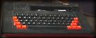
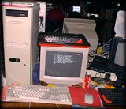
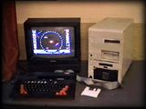
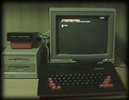

The ORIC Scene
 Following the official release of the first real Oric demo at the Volcanic 4
demo party, Chandra has asked me to make the presentation of the Oric demoscene as
well as a short explanation about how this computer works, its capabilities, to
explain you what represents the ORIC world in 1998.
Following the official release of the first real Oric demo at the Volcanic 4
demo party, Chandra has asked me to make the presentation of the Oric demoscene as
well as a short explanation about how this computer works, its capabilities, to
explain you what represents the ORIC world in 1998.
Presentation
My first computer was an Oric Atmos. Before this, I had already used

some "ZX81" at the local micro-computer club, but the Atmos was really my first computer... bought with all the money I saved during the past year... At that time, the C64 was priced around 4000fr (USD650), the APPLE II was over 10000fr (USD1630)... And the Oric cost less than 3000fr (USD490), for a color computer with a high resolution graphic mode, sound and a real mechanical keyboard. I was happy !I learned the BASIC, begun the assembler (everything assembled by hand, and entered in DATA's with a BASIC loader...), bought extensions (printer, voice synthesizer, graphics tablet, joystick, ...). At the end I sold it to buy and Atari 520 STF.
On the ST, I joined the NeXT group which released the "Phaleon Demo" in 1992. My handle is Dbug. Perhaps some still remember it :).
I rediscovered Oric in 1996, while I worked at Adeline Software (Little Big Adventure, Time Commando) as a PlayStation programmer. I downloaded the emulator, replayed the old games. Passion returned. After one hour off "Defence Forces" (a defender look-a-like), I went back to the Net. I discovered the ORIC WEB: Plenty of active people, a French club (Club Europe Oric), an English club (Oric User Montly), 2 fanzines, some pages on the hardware, some downloadable games, development kits for C and asm (cross-compilation), and many projects in progress (IDE interface, new versions of the DOS, Lisp and Forth compilers, new games, etc... ).
The ORIC Scene
At this time, I decided to start coding on the Oric again. I began a "Dungeon Master like", and then I realized that finally it was easy to code with a cross-compiler and an emulator! So I started to code demo effects...
For that, I needed documentation.. I started to ask around. I finally recovered books of prog 6502 on APPLE 2, the Atmos BASIC handbook and the manufacturer's documentation of the VIA6522 (the interrupt and I/O controller). I exchanged one box of "Time Commando" PC with an Oric 1, and bought Téléstrat (or Stratos in british) for 250fr. I used my ST 68000 sources to code the whole sound part. I ripped the conversion tables of my digit replay routine to play samples with the YM. It worked fine. Maximum frequency is 8khz mono, played on the 3 channels for maximum quality. There remains 13 unused nops... and the whole thing done with interrupt masking to save processor time...
Finally, you can see all I've done in the demonstration presented at the Volcanic 4 Wild Compo. I've great hope in finding new effects feasible with the limited hardware of Oric !

For the moment, the Oric scene, it's me... considering that "Just Oric" is the first demo ever made on this machine. (Except the cassette of demonstration delivered with the machine, that I regarded as the best software ever made for a long time on this machine!). But it will grow bigger! A certain " Twilite " (Jonathan Bristow), English, creates astonishing things with his Oric. He does everything in native mode. He has his Atmos, his 4 disk drives (3 ", 3"1/2, and 5"1/4). With that, Mister Bristow has programmed a soundchip musiceditor, a 3 channel soundtracker... He is really crazy, but he's really good. He masters graphics limitations, as well as video mode switchings. What he does entrances me :)If everything goes right (if I manage to repair my disk controller), the next demonstrations will have original music, and perhaps even soundtrack music. I hope to be able to do 3D, and bitmap effects
Fabrice Françès, author of Euphoric (the best emulator so far), has also made demonstrations without being aware he did. He samples a Patricia kass's CD, and all the music is replayed on the oric, loaded from the disk drive. Considering it is loaded block by block, it gives something funny like: " He says to me that I am [...] beautiful!!!! That he [...] was waiting for mee [...] eeeee". Life is cool. Oric has come back to live. We even have a 2 page article the second issue of "les puces informatiques" (a french low cost magazine) talking about Oric. Recently, someone started porting the " Z-machine " for the Oric. Thus, all the Infocom games in text mode are playable on the Oric (Zork, Hitchiker Guide to the Galaxy...).
Technical description (Oric 1 or Atmos)
The processor:
It's a 1mhz 6502. Roughly, it's similar in speed to the C64 or Apple2
processors. Not really fast. Slow even, compared to the Z80
that Amstrad, Sinclair and others were equiped with. There are 64 processor
cycles per horizontal blank line (hbl), making a total of 64*313=20032 cycles
per frame. For comparison, the Atari ST with the 8mhz 68000 got 512
cycles per hbl for a total of 160256 cycles per vbl.
The memory:
64 kbyte. The upper 16kb are overlapped by the BASIC rom. If the disk drive
is not connected, these 16kb are lost. This explains why "Oric Atmos 48k" is
written on the case (including video memory). When the disk drive is
present, it's possible to switch between the ROM and the RAM (that contains
the DOS in that situation).
The video:
Roughly, these are 2 separate video modes, that can be mixed to create new modes.
The TEXT mode, that presents 40 rows by 28 lines characters.

The HIRES mode, with 40 "blocs" on 200 lines (and 3 TEXT lines at the bottom). That means it's not possible to emulate an Oric with an Atari ST, without using Overscan. The 200+(3*8) lines cannot fit in a standard 320x200 picture :)The 8 colors cannot be modified. I call that 1 BIT TRUE COLOR :) (BLACK, WHITE, RED, GREEN, BLUE, YELLOW, CYAN, MAGENTA). Each character is composed of a 6x8 matrix. The character set is copied to RAM at bootup time, so it's possible to change it. The charset address cannot be changed.
A HIRES "block" corresponds to one BYTE of memory. This BYTE is composed of 8 bits. It seems standard until now. But these 8 bits corresponds to only 6 pixels on the screen (thus the special non standard 240x200 video mode). The 2 remaining bits are used to control the effects of the 6 others... (Starts to be funny)
If bit 6 is true, the 6 lower bits will be read as pixeldata (that means if you want to erase all pixels on the screen, you have to poke the value 64, not 0 !).
If this bit is not set, it means that the 6 lower bits will be taken as the video serial attribute. This attribute tells the video chip that you want to change the color of paper or ink, to add blinking, to switch between HIRES and TEXT, and so on.
Clearly, if you want to change the color, you cannot have pixels at the place where you change the color. And considering it works with "blocks", every modification is snapped to a 6 pixel boundary, and affects all 6 pixels of this block. It's really NOT COOL for creating pictures. Now, you can imagine how hard it has been to draw the Win95 logo !
The sound:
The chip is a AY-3-8912. Same capacities as the chip of the Atari ST,
Amstrad CPC or Spectrum+. The only trouble is that the sound chip is not
connected to the bus. On ST, you can change a sound register with 2 move.b
or 1 movep (move.b register,$ffff8800.w // move.b data,$ffff8802.w)
On the oric, you have to do that through the I/O controler (the VIA). You
need a minimum of 6 instructions for modifying a value in the chip. That's
not good for sample replay !
In summary, and I will finish here, you can view the

Oric as a C64 with the graphics ability of a ZX spectrum (in worse). Powerful, isn't it ???- The Oric Web:
http://www.ensica.fr/oric/oriclink
- Emulators (Atari, Amiga, Acorn, PC, X11, Linux, Mac)
http://www.ensica.fr/oric/emulate_english
- My home page (Oric/Atari/PlayStation):
http://wwwperso.hol.fr/~mpointie
- Club Europe Oric:
http://ourworld.compuserve.com/homepages/laurentch/
- Oric User Monthly:
http://www.soft.net.uk/oum/
- The Oric newsgroup (few people use it, 'coz of spamming):
comp.sys.oric
- The mailing list (used by more than 150 people):
oric@????
- The oric archive, with all new softs:
http://www.ensica.fr/oric/archive_english.shtml
- The developers page:
http://www.ensica.fr/oric/developer.shtml
- The Web Ring:
http://www.webring.org/cgi-bin/webring?ring=oric;list
Dbug and me were neigbours at Volcanic Party 4 in France, but we didn't meet. We met on IRC, and as I have been impressed by his demo, I asked him to write an article about the Oric scene. Two days later, I received 2 mails in my mailbox, a french and an english version of a big article. Here is the story of a passionate.
<<... a color computer, with a high resolution graphic mode, sound, a real mechanical keyboard. I was happy ...>>
<<... I hope to be able to do 3D, and bitmaps effects ...>>
<<... If the disk drive is not connected, these 16kb are lost ...>>
<<... The Oric is like a C64 that would have the graphics ability of a ZX spectrum ...>>